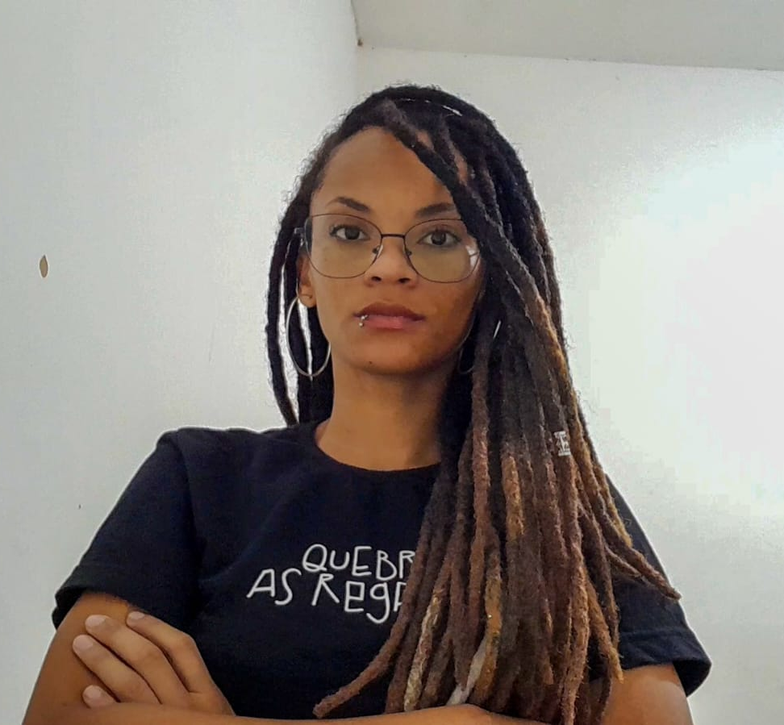

Mayara Sena dos Santos é uma jovem estudante da área de tecnologia
que está sempre em busca de novos conhecimentos. Nascida em Santo
Amaro da Purificação, filha de Marilene Brandão e Adenilson Almeida,
mãe do Romeu, Téo e Zara, seus gatos que a conhece como ninguém,
foi criada no interior da cidade com seus 3 irmãos, levando uma vida
simples e de muita luta. Mayara desde sempre foi uma jovem muito
prestativa e estudiosa. Logo após finalizar seu ensino médio, foi em
busca de trabalho na sua pequena cidade e logo encontrou uma oportunidade,
ali mesmo, perto da sua casa e de seus familiares. Portanto, seu desejo
sempre foi viajar pelo mundo, buscando explorar o desconhecido e ingressar
na tão sonhada faculdade.
Quando mais nova, sonhava em ser veterinária, devido ao seu amor pelos
animais, poucos anos depois desejou ser Bióloga, por ser apaixonada pelas
plantas e, como vive em constante fase de aprendizado, hoje estuda programação.
No ano de 2023, Mayara fez a sua primeira viagem sozinha para outro
estado, disposta a trabalhar para dar uma vida melhor a sua família, ela foi
corajosamente atrás desse objetivo.
Pouco tempo depois, retornou á capital
Baiana, por não ter conseguido realizar o que foi em busca e, mesmo passando por altos
e baixos, nunca desanimou ao tentar. Hoje, ela se encontra na cidade de
Salvador, morando sozinha, trabalhando e fazendo Faculdade, tendo uma vida
produtiva e iluminada como sempre sonhou.
Mayara Sena estuda na Universidade UFBRA, (que é conhecida por poucos) cursando
Análise e Desenvolvimento de Sistemas. Completou seu ensino médio aos 18 anos
na cidade de Santo Amaro, onde se formou no curso técnico em Administração. Recentemente, a jovem fez
parte de um grupo de trabalho voluntário, onde produzia
cards, isto é, material utilizado para promover o trabalho da comunidade. Mayara também tem se mostrado disposta a aprender a Linguagem de Sinais (Libras),
pois ela havia iniciado o curso no ano de 2022, mas devido a falta de interesse, acabou deixando de lado. Após uma palestra que
havia participado no seu trabalho no ano de 2025, voltou a cursar Libras e finalizou seu curso, orgulhando a si e aos seus colegas
que admiram a sua determinação.
Em 2023, ela teve sua vida marcada pela
fotografia, na qual foi reconhecida pelo excelente trabalho que fazia com a sua simples
câmera fotográfica e o seu celular, nos quais registrava tudo. Logo após se mudar para a cidade, Mayara deixou de fotografar devido
á sua rotina corrida e por estar sem a sua câmera.